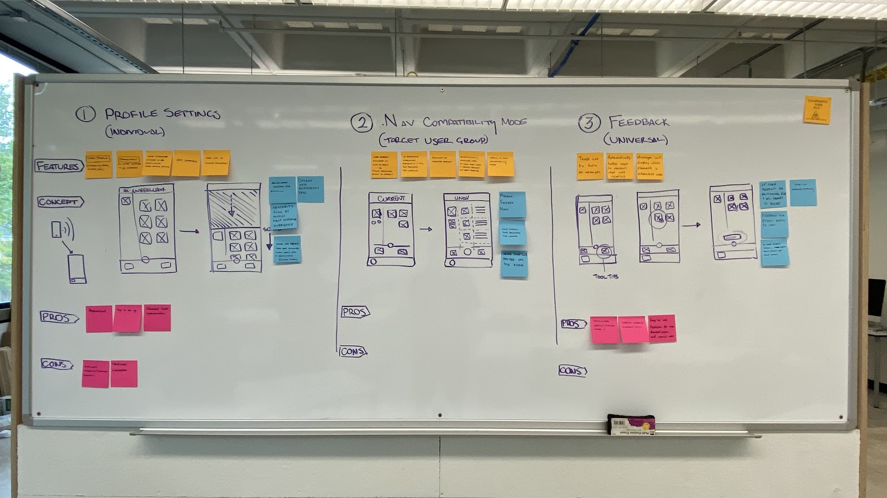
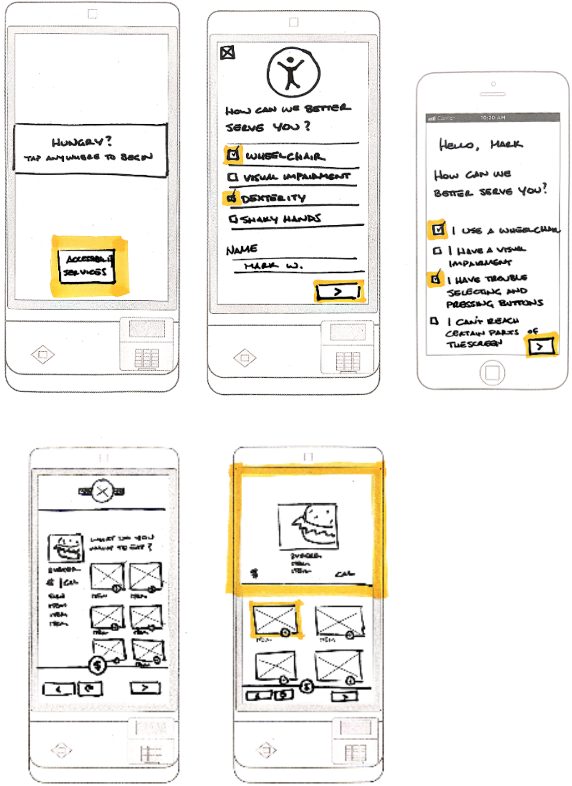
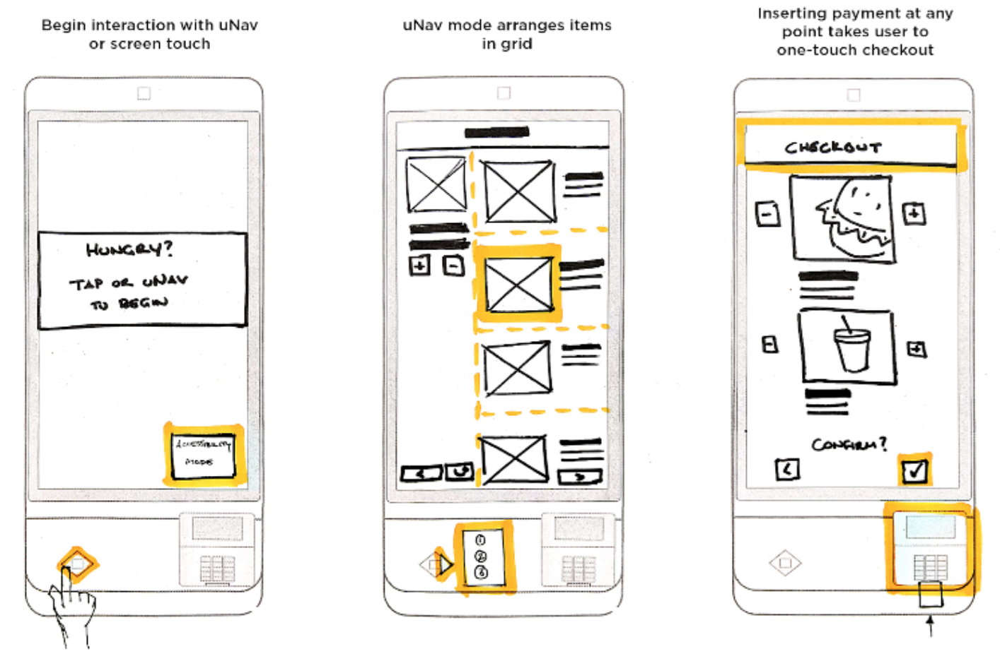
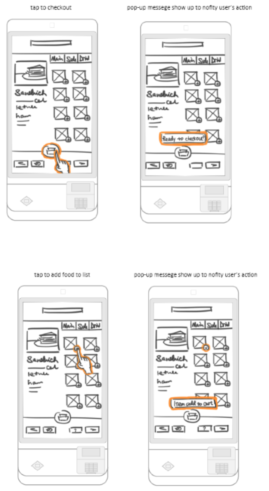
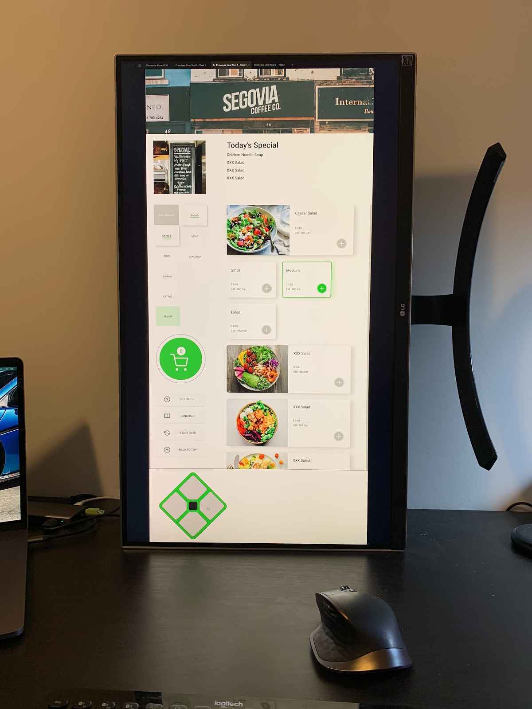
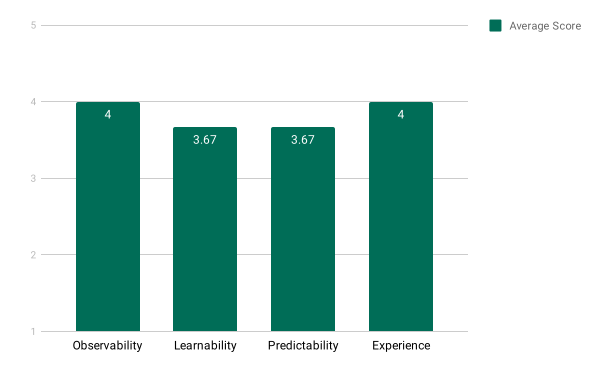
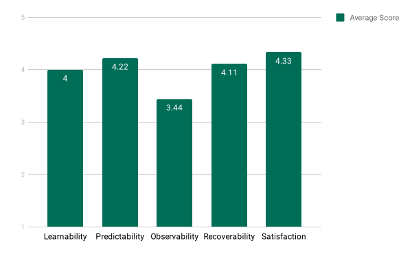

UNAV COMPATIBILITY MODE
An accessibility mode which makes NCR's Kiosks more accessible for wheelchair usersRole I conducted user experience research to finalize the design direction and performed usability tests on the prototype.
Team Benton Humphreys, Kevin Key, Varnit Jain, Yunfei Wang Timeline Aug 2019 - Nov 2019
RESEARCH
Literature Review
There is an ever-growing field of research to suggest best practices for accessibility within digital design, yet there seems to be a lesser focus on integrating accessibility into kiosks. We have sourced, reviewed, and synthesized several prior research papers that either touch on kiosk accessibility or an applicable field (e.g. web design). Some of the key takeaways from literature review are:
- There is a lot of research focusing on the idea of mechanical adjustments. Our approach will not be focused on that but the idea that a system can recognize and adapt to its user is something to be considered.
- Many models exist that can be good reference points if we need to do an overall accessibility test of kiosks , or understanding how other kiosks have improved physical accessibility.
- A good contextual enquiry can be very insightful - they are not only able to correct the user flow but are also able to add additional features.
In order to better understand how users interact with the current system, we decided to observe users interacting with the kiosk during lunch hour at NCR. Though our target user group consists of those with disabilities, we found it important to observe all users who might interact with our system. Any design that targets those with physical disabilities will also affect how others interact with the system.
Our goal with observation was mostly exploratory and built off of our task analysis. We wanted to determine if users experienced difficulty with any point of the ordering process due to usability issues. Additionally, we aimed to explore baseline data on the learnability of the kiosk interface. In short, we wanted to know how a novice user interacts with the system compared to a user that has been familiar with the system for some time . We felt this was an important step in deciding how users of different experience levels interacted with the system, and we rationalized that we could use this information to inform design decisions in subsequent stages.
{kind=link}
{kind=link}
{kind=link}
{kind=link}
{kind=link}
{kind=link}
{kind=link}
{kind=link}
{kind=link}
Semi-Structure Interview
We decided to conduct a semi-structured one-on-one interview as our first research method involving a physically disabled user within the problem space. Our main information goal from this research method was to gain insight into our user group’s wants and needs regarding digital technology accessibility. After conducting our observation it was clear that the kiosk has general usability issues, but we needed to focus on select issues affecting physically disabled users. Another goal was to understand the limitations of wheelchair users during point of sale transactions due to their seated position. Our understanding prior to the interview was that not all kiosks were designed with wheelchair height in mind for usability.
Beyond this, we wanted to determine specific pain points that our interviewee had with kiosk accessibility. We also wanted to know what public technologies they currently found helpful, whether or not it was implemented in point of sale kiosks. We also went into the interview with the idea that we could potentially narrow down our user group if given the opportunity.
{kind=link}
We chose an online survey as a research method to collect data largely because of its ability to collect data from a substantial set of users in a short time. We wanted to learn what users with disabilities like and dislike about point of sale kiosks. We wanted to know how users’ disabilities hinder specific interactions with a kiosk. Based on our previous research methods we decided another goal was to learn about common frustrations at each stage of the process of completing a checkout. An secondary information goal was to refine our user group by recognizing common problem areas and patterns. We also wanted to determine if certain users prefer tactile interaction versus touch screen and for completing what tasks.
{kind=link}
{kind=link}
{kind=link}
{kind=link}
{kind=link}
{kind=link}
Personas and Empathy Maps
After synthesizing our data in the form of an affinity model, we felt we understood our users well enough to develop personas. The personality types, preferences, and frustrations were all informed insights from our interview and survey results, which were generalized to form a cohesive persona. We created empathy maps for both our personas to further elaborate our understanding.
{kind=link}
{kind=link}
{kind=link}
{kind=link}
FINDINGS
Our research methods provided valuable insight into who our user group is, what common points of frustration and difficulty they with interactive kiosks (and more generally, digital technology), and, perhaps most importantly, resulted in an informed design direction for the next part of this project. After every research method was completed our team met to discuss the findings and how we would want to pursue further research methods.
{kind=link}
Themes
From the task analysis, observation study, interview, and survey, we had a general idea of where users (both with and without physical impairments) we're likely to experience problems. A few of the most straight-forward problems, and likely the most easily remedied, were:
 Users have difficulty performing maintenance tasks for the first time
Users have difficulty performing maintenance tasks for the first time
CONCEPTS
Our group started this phase of the project by brainstorming different design concepts with users’ limitations, needs and design implications we analyzed from previous section in mind. We strove to incorporate design implication from previous research into the redesign of the kiosk ordering system. We did this through an informed brainstorm session where we generated ideas relevant to our paint points and design implications.

We finalized various features and ideas from brainstorm session into three abstract design concepts that covers different ranges of potential users of kiosks mentioned above. Sketches and descriptions were created for each concepts for assessment by experts and users for feedback.

Concept 1: Custom Profile

This concept utilizes the existing XK32 interface, but allows users to create a custom profile based on their individual needs and preferences. This concept targets users’ pain points on an individual level and, as such, can most effectively mitigate frustrations compared to other more generalized approaches.
-
Strengths
- Extremely customizable experience that appeals to individual needs and preferences
- Quick setup that can be accomplished on personal device or kiosk interface
- Maintains current GUI for those already familiar with the system
- Requires several entirely new interface “filters”
- The requirement for profile creation might dissuade some users from using it
Weaknesses
Concept 2: uNav Compatibility Mode

This system aims to augment the uNav interface by creating an accessibility mode which changes the layout to make it more accessible using uNav. The uNav Compatibility Mode targets user’s pain points on a community level for users who are using the uNav interface.
-
Strengths
- No need for any new hardware additions
- Faster Interaction through uNav shortcuts
- Appeals to our target user group’s preference for tangible interfaces
- A bit of a learning curve because of a new interface
- Designers will have to create two sets of UI for all restaurants
- Pasting instructions affects the aesthetic of the system
Weaknesses
Concept 3: Feedback

This concept provides users with instant feedback for certain actions to keep users updated throughout the ordering process and tool tips option for troubleshooting. This concept takes a universal approach to target general user's pain point of losing confidence about their action and confusion towards the system.
-
Strengths
- Only minor design changes added
- Doesn’t interrupt current flow
- Cover both our target users and general kiosk users
- No features that solve the problem of accessibility
- The popups can be disruptive for users
Weaknesses
CONCEPT EVALUATION
The first feedback session was designed for the perspective of an expert in the field of assistive technology. The set of questions from the first feedback session are intended for accessibility experts to review and identify obvious issues of our design concepts based on their experience with working with people with accessibility needs. We planned on leveraging the feedback we obtained from first feedback round to help make decision on which concept and features to take forward.
From there, the final design concept can be developed into a detailed wireframe that can be tested by user tasks. The second round of feedback session was done with our stakeholder, NCR, in order to work towards our ultimate goal of achieving better accessibility of the NCR kiosk for wheelchair users. This round was designed to understand users’ performance and opinions towards the system and for us to resolve issues discovered early so the later prototyping phase can move more smoothly.
Feedback Session 1 Design - Sketches
Goals
After fully defining our concepts and developing sketches to represent them, we began developing our first feedback session. At this point we wanted to present our concepts at a relatively low fidelity to allow for feedback with original and creative ideas for improvement. The goal of this feedback session was to provide usability experts with a broad understanding of the three concepts we created in order to obtain feedback on the idea as a whole, and for certain features within the idea. For each concept we wanted to understand the following:
- The value each feature adds to the overall design
- Preferences for specific features within the concept and why
- Potential changes or improvements that may strengthen the concept
Concept Refinement
After analyzing our expert feedback results and speaking with NCR, we decided to pursue concept 2 (uNav Compatibility Mode) as a basis, and incorporate features from other concepts. From a user’s perspective, concept 2 most significantly addresses the accessibility issues presented during the initial observation. From a stakeholder’s perspective, the proposed concept is a companion to the already existing uNav control, and might be considered as an evolution of this system.
Feedback Session 2 Design - Wireframes
Goals
Following the feedback from the concepts, we chose to take a deeper look at the uNav compatibility feature by generating mid-fidelity wireframes. These wireframes were constructed with the intent to inform a user of how they might navigate through the ordering process from a high level, what the information structure would look like (e.g. information hierarchy and element size and placement), and how certain features might influence their experience (e.g. tab indexing and highlighting selected elements). From this session we wanted to understand the following:
- Relevant opinions towards the overall design
- Preferences for specific features within the concept and justification
- Potential changes or improvements that can be considered for the system
Prototype Design
Based on our feedback sessions on the sketch concepts and wireframes, we can make certain improvements to the current design shown in section 06. Regarding accessibility considerations, the entire concept is designed to address usability concerns that those with physical disabilities might face when using the kiosk. For this reason, all of the usability refinements mentioned below are designed with accessibility in mind.
PROTOTYPE & TESTING
We created three high fidelity prototypes using Figma for online collaboration and each prototype would serve its own purpose for different task-based analyses. All of the prototypes begin with a welcome screen, which indicates that the user can begin their interaction by either tapping the screen or pressing a button on the uNav. It is important to note that we did not have the means of connecting a physical uNav control device to the prototype, and so simulated it on screen within the prototype itself. The point of this prototype is not to focus on the input methods of the physical device, but the output of what the uNav control leverages, which is the tab-indexing functionality. Therefore, we felt that an onscreen uNav was adequate in representing our intentions and research goals of the prototype.
Task-Based Prototypes
Testing
Prototype Setup
Because we did not have access to an XK32 kiosk for user testing, we set up a monitor on its side (shown below) which closely represented the actual size of a real XK32 Kiosk. Further, as previously mentioned, we simulated the uNav interaction by including a d-pad style control on screen, which the user was able to control with a mouse.

Expert Testing: Cognitive Walkthrough
We chose to do a cognitive walkthrough to evaluate out prototype and weed out the common mistakes in the interface . We used three cohorts from the HCI program as usability experts and asked them to perform a task on our prototype. Rather than just knowing the overall experience, we were able to pinpoint issues on individual screen/interactions. Information goals of our cognitive walkthrough testing were:
- Observability: Can the users understand which stage they are in the ordering process and the numbers of steps needed to complete the order? Can the users identify where their cursor is on the screen and where can it go?
- Learnability: How easy it is for first-time users to complete the food ordering process within the new user interface with uNav keypad?
- Predictability: Can the users understand where their cursor can go before actually pressing them? Can the users understand the visual cues to predict the logic flow of tab indexing?
- Experience: Are users satisfied with the overall ordering experience?
Results
We received the following Quantitative Usability Specification Ratings on a scale of 1-5:
(1 = highly disagree, 5 = highly agree)

Here is the summary of the Qualitative Feedback:
- Images are clickable - not obvious
- Some buttons are small
- Menus aren’t aligned well with other interactive items on the screen
- Visibility issues with how many steps are left in the ordering process
- Child menu is not obvious/clear - Heirarchy Issue
- Pay screen is different from the rest of the system
- Learning curve at first, then the tab indexing is intuitive
- Hierarchy is not obvious between parent and child menu
- There is no obvious back button
User Testing: Moderated Task-based Usability Testing
We chose to do moderated task-based usability testing with users to determine how well the interface is integrating with the uNav keypad as an accessibility feature for input during the food ordering and checking out process. Also, we want to collect data on users’ performance for examining the logic flow of tab indexing and get feedback on content, functionality and visual layout. We conducted 9 in-person single-participant sessions. Information goals of our user testing include:
- Learnability: How easy it is for first-time users to complete the food ordering process within the new user interface with uNav keypad?
- Predictability: Can the users understand the visual cues to predict the logic flow of tab indexing?
- Observability: Can the users understand which stage they are in the ordering process and expected numbers of steps to complete by visual elements?
- Recoverability: How easy it is for first-time users to cover their errors with the help of system functionality?
- Satisfaction: Are users satisfied with how the system allows them to complete food ordering and modifying tasks?
Results
We received the following Quantitative Usability Specification Ratings on a scale of 1-5:
(1 = highly disagree, 5 = highly agree)

Here is the summary of System-wide Recommendations:
- Improve parent-child menu visual hierarchy
- Incorporate a “back” button or similar function
- Decrease use of green color throughout system to emphasize highlighted elements better
- Refine visual linear relationships between interactive elements
- Emphasize or add system status indicators to display order progress
Here is the summary of other user feedback:
- The side navigation bar is not clearly state the relationship between each stage of the ordering process.
- The side navigation bar did not clearly indicate the parent and child relationship of the main and sub navigation selections.
- The progress navigation bar is not telling the users there is an option to go back.
- Highlight tab box is not visually emphasized enough for first-time users to understand and recognize.
- Pay button seems out of place, not obvious and disconnected with the whole progress navigation.
- Menu plus icon is suggesting extra interaction on itself.
- The change design of review page makes it disconnected from the rest.
- The cart icon is not useful but visually distracting.
- The information about selected items is out of view and hard to distinguish from the today’s special menu.
- Users don’t know how to get to the side functional buttons.
- The system is offering too much freedom for users to explore and users can be confused about what to do.
Apart from all the issues mentioned above, we found that the level of usability and visual representation was satisfactory and the task flow is easy to follow. We found participant reception to our prototype to be positive, and most issues could be solved with some UI changes and building a detailed information heirarchy. NCR is satisfied with the overall design recommendations and plans to keep them in mind while moving forward in the developement of the XK32 Kiosk.